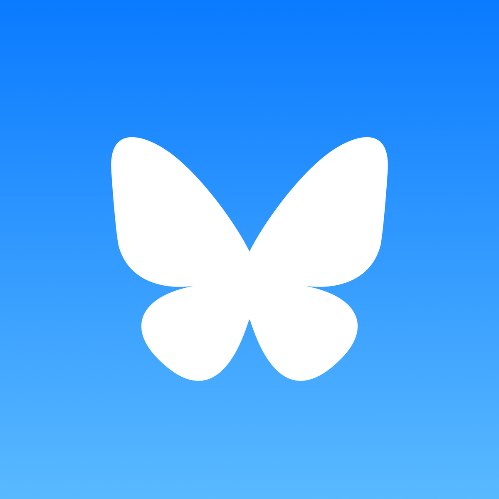

<html lang="en">
  <head>
    <title>Portfolio</title>
    <link rel="stylesheet" href="styles.css" />
    <link
      rel="icon"
      type="image/png"
      href="images/favicon-32x32.png"
      sizes="32x32"
    />
    <link rel="preconnect" href="https://fonts.googleapis.com" />
    <link rel="preconnect" href="https://fonts.gstatic.com" crossorigin />
    <link
      href="https://fonts.googleapis.com/css2?family=Nunito&display=swap"
      rel="stylesheet"
    />
    <link rel="icon" type="image/png" href="favicon-16x16.png" sizes="16x16" />
  </head>
</html>

<body>
  <div id="nav-container">
    <div id="navbar">
      <a class="button" href="/index.html">Home</a>
      <a class="button" href="/index.html#projects">Projects</a>
      <a class="button" href="#resume">Resume</a>
      <a class="button" href="/index.html#contact">Contact</a>
    </div>
  </div>
  <section id="about-me">
    <div class="portrait">
      
    </div>
    <div id="item-info">
      <h1>Hi, I'm Mana!</h1>

      <p>
        I'm a game artist and designer from Connecticut, and I've been making
        art and telling stories ever since I could pick up a pencil. From there,
        I studied Game Design and Development at RIT and graduated magna cum
        laude in 2025. My experience in college really opened my world to the
        more techincal sides of game-making, and that only strengthened my
        passion for games.
        <br /><br />I've always been fascinated with games as a medium, and
        getting the chance to work on something fun with similarly passionate
        people has always been a dream of mine. I'm a very positive and colorful
        person, and I love to create things that pop with personality! (I even
        made this portfolio website completely from scratch because I had such a
        specific vision for it, that I had to make it on my own.) Not only that,
        but I think it's really important for the artistic and technical sides
        of games to work together, and I enjoy bridging that gap with my
        knowledge in both fields. I have a lot of pride in the things I
        contribute to, so I want them to be the best they can be. <br /><br />
        Outside of making games, I love things like cosplay, improv comedy, a
        capella, indie music, tabletop RPGs, fiction writing, drawing, and
        cooking. Feel free to contact me with any questions!
      </p>
    </div>
  </section>
  <section id="resume">
    <object
      class="pdf"
      data="media/Resume - Amanda Rowe (1).pdf"
      width="800"
      height="500"
    ></object>
    <a class="link-button hvr-forward" href="https://docs.google.com/document/d/1rnn3tW8_CqB8Q-raamgM8en6FcT8-KPYapWEpLyLV_o/edit?usp=sharing"
      >Resume on Google Docs</a
    >
  </section>
  <section id="contact">
    <h1>Contact Me!</h1>
    <p>
      Send me an email at <b>alr@manarowe.fun</b> or a message over
      <b>LinkedIn</b>! I'll be sure to respond as soon as I can.
    </p>
    <div class="flex-container">
      <a href="https://www.linkedin.com/in/amanda-rowe-166a2621a/"
        ></a>
      <a href="https://bsky.app/profile/manacore.bsky.social"
        ></a>
    </div>
  </section>
  <footer>Copyright © 2025 by Amanda Rowe</footer>
</body>
